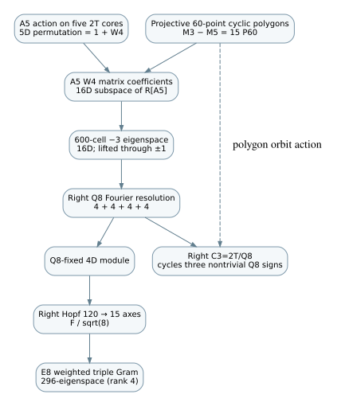
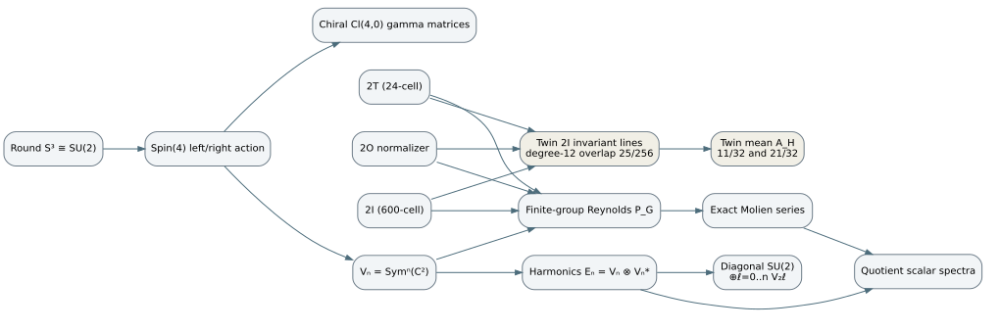
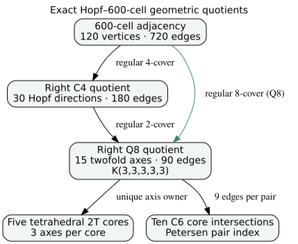
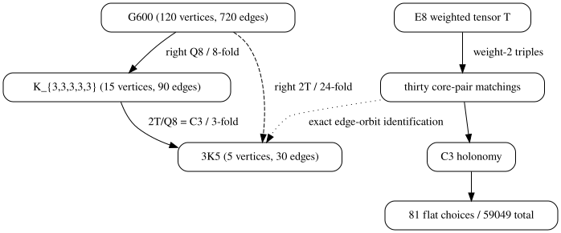
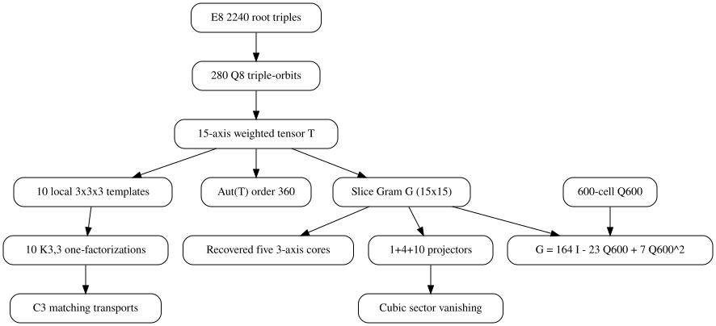
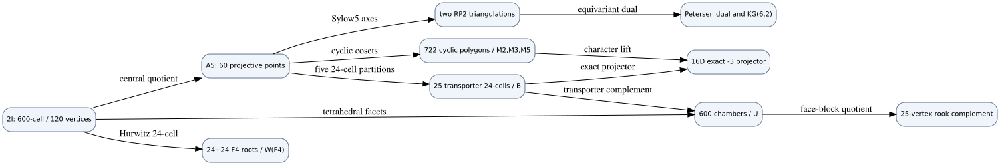
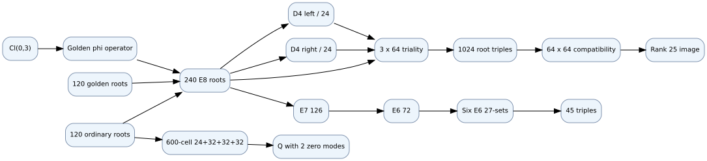
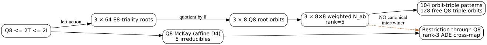
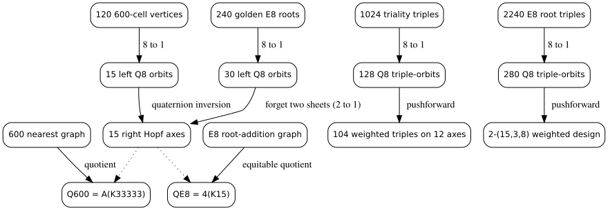

Structural geometry
Structures you can inspect.
Visual diagrams from the supplied S³ Structure Network v1.41. These document geometric relations; they are not automatically proofs of physical decay, mass or interaction rates.
The S³ network
Original SVG exports are included unchanged, with the source network available as a versioned data archive.

A₅, 600-cell and E₈ bridgeOpen SVG ↗

Petersen / A₅ / 600-cell mapOpen SVG ↗

Spin(4) structural coreOpen SVG ↗

McKay–Clifford bridgeOpen SVG ↗

Hopf quotient cover towerOpen SVG ↗

2T–C₃ covering towerOpen SVG ↗

Batch 10 tensor compositionOpen SVG ↗

Batch 1 exceptional bridgesOpen SVG ↗

Batch 4 exchange isogeny coreOpen SVG ↗

Batch 5 finite coresOpen SVG ↗

Batch 6 golden e8 bridgesOpen SVG ↗

Batch 8 q8 triality bridgeOpen SVG ↗

Batch 9 common axis quotient diagramOpen SVG ↗